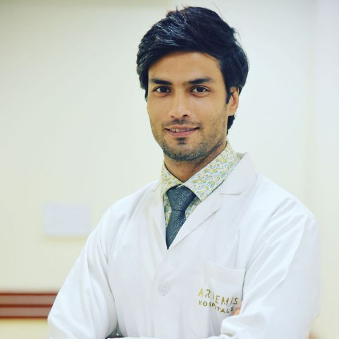

LIFE MATTERS Hospital |

LIFE MATTERS Hospital
Life Matters is a satellite unit of Life Matters Hospital, Mohali, located in the heart of Chandigarh. The hospital endeavors to provide the finest quality of healthcare services and make them accessible to the people of Chandigarh city and its suburbs. It offers out-patient for all the major specialties including Cardiology, Endocrinology, ENT, Ophthalmology, Gastroenterology, IVF, Internal Medicine, Nephrology, Paediatrics, Pulmonology, Rheumatology, Urology to name a few. With the support of a team of highly qualified and well-experienced doctors, it also offers a wide range of minor day care procedures and investigations. Life Matters is certified by Government of Chandigarh, UT, and has been certified from Chandigarh Pollution Control Committee. It has been registered for AERB, PC & PNDT Chandigarh administration.
Meet Our Esteemed Doctors
|
 |
 |
 |
|
| DR. AKASH GHUMAN |
DR. HRITISH CHAUHAN |
DR. ANSHIKA OBEROI |
DR. RITIKA NEGI |
| (Cardiologist) |
(Neurologist) |
(Gynecologist) |
(Pediatrician) |
Contact Us +91 96366 20000 / 01 | LifeM@hospital.com